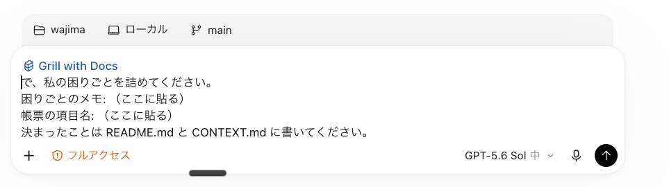
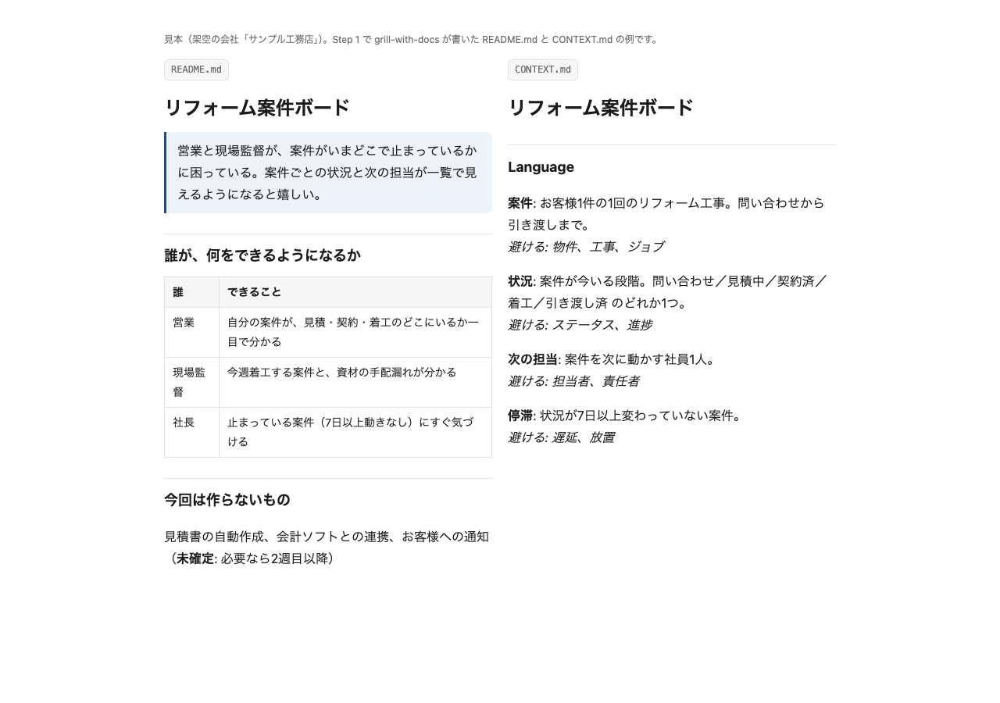
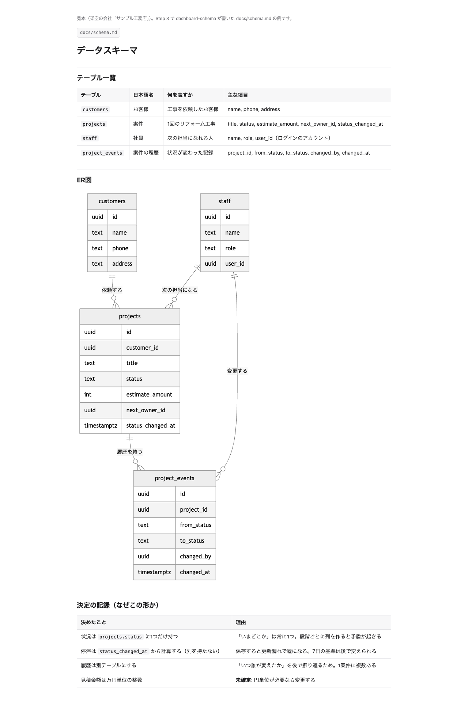
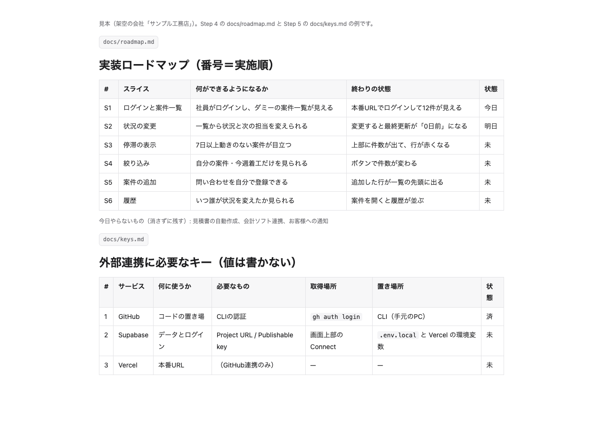
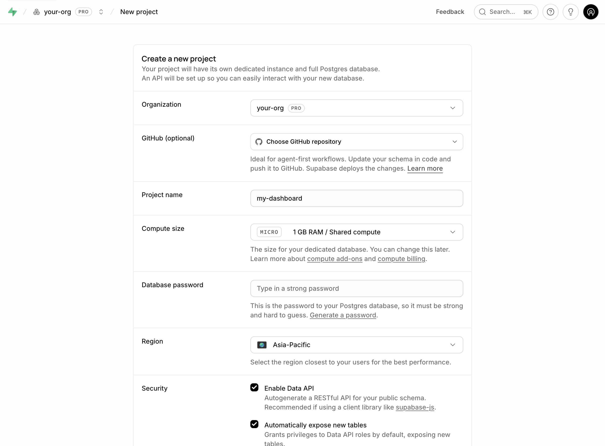
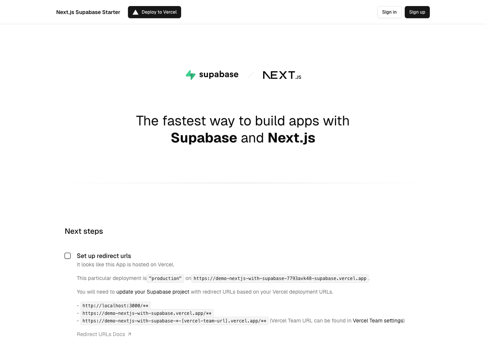
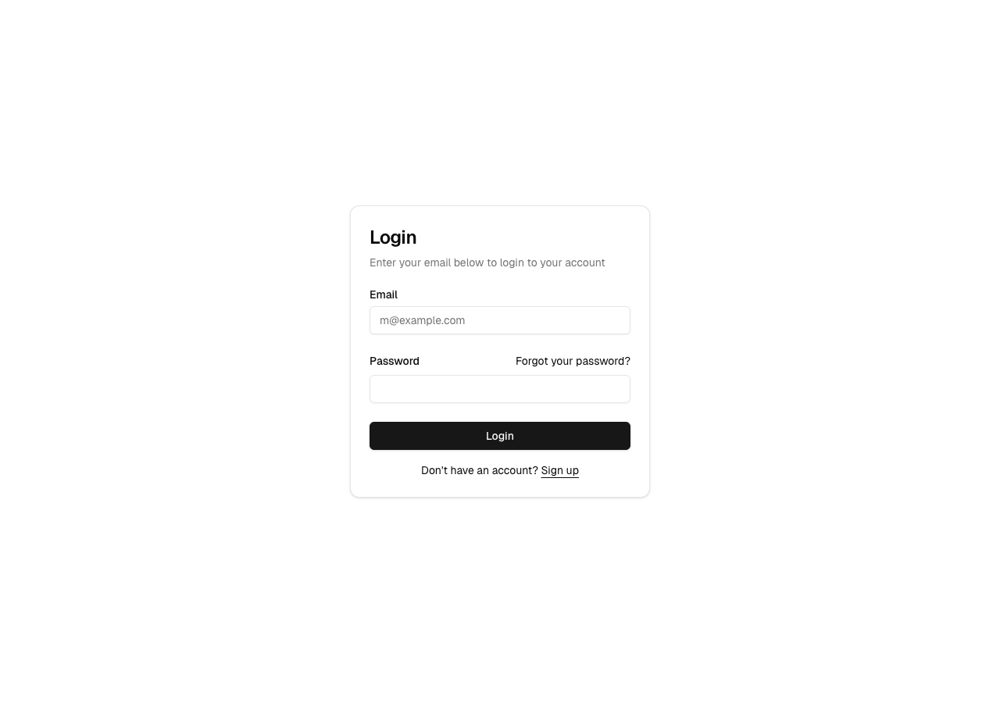
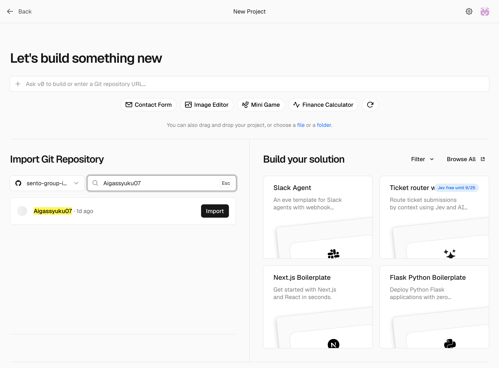
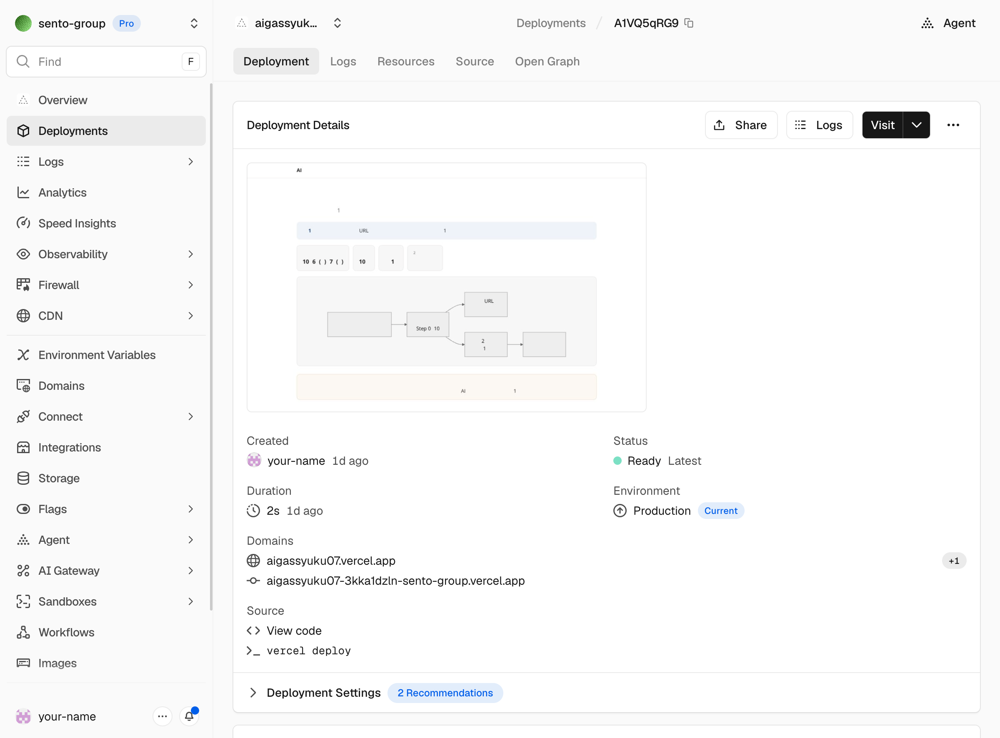

作る — 4段階・8ステップ
作り方の4段階を、当日の手順にしたものです。Step 0（環境とAIの初期設定）は2. 環境とAIの初期設定で済んでいます。
flowchart TB
subgraph A["段階1 粗く作る（安いモデル）"]
direction LR
S1["1 困りごととログ"] --> S2["2 MVPを作って触る"]
end
subgraph B["段階2・3 研究と計画（賢いモデル）"]
direction LR
S3["3 研究する"] --> S4["4 計画する"]
end
subgraph C["段階4 ゼロから作り直す（安いモデル）"]
direction LR
S5["5 土台"] --> S6["6 ログインと一覧"] --> S7["7 本番"]
end
A --> B --> C --> S8["8 次の一手と振り返り"]
ずっと守ること: 要望・決定・詰まりは、出たその場で「ログして」と言う（docs/log.md）。段階が変わってモデルを替える前には、下のプロンプトでここまでをログに書き出す。会話は次のモデルに引き継がれず、渡るのはファイルだけです。
ここまでで出た要望・決定・詰まりを docs/log.md に書いて。次のモデルがファイルだけ読んで続きから始められるようにして。どのStepでも使う一言
次は何をすればいい？ guide で現在地を判定して、次の一手を1つだけ教えて。使うモデルも教えて。コマンドはあなたが実行して。段階1 粗く作る（安いモデル）
-
Step 1. 困りごとを1文にして、ログを始める
何を作るかを1文にし、これから出る声を全部ためる入れ物（開発ログ）を作ります。
入力欄で /dev-log と打って候補から選ぶCodexは $dev-log でも可文章でも: 「dev-logで〜して」AIに貼る（Codex / Claude の入力欄へ）dev-log で、次の困りごとと帳票の項目名を docs/log.md の最初に書いて。 困りごと: （ここに貼る） 帳票の項目名: （ここに貼る） -
Step 2. MVPを作って触る
段ボールの模型です。15〜30分で触れるものを作り、触って出た声をログにためます。雑でかまいません。あとで捨てます。
入力欄で /dashboard-mvp と打って候補から選ぶCodexは $dashboard-mvp でも可文章でも: 「dashboard-mvpで〜して」AIに貼る（Codex / Claude の入力欄へ）dashboard-mvp で、docs/log.md の困りごとから mvp/index.html に触れるMVPを作って、ブラウザで開いて。ダミーデータで、15〜30分で。
見本（架空の会社）: 段階1で作るMVPの例。実物を開いて触る
段階2・3 研究と計画（賢いモデル）
ここでモデルを切り替えます。先に上の「段階が変わる前に毎回貼る」プロンプトを送ってから、入力欄右下（Claudeは /model）でいちばん賢いモデルを選びます。
-
Step 3. 研究する
段ボールの模型を一級建築士に見てもらいます。素人では気づけない弱い所と、良くする方法を洗い出し、ファイルに残します。
入力欄で /dashboard-research と打って候補から選ぶCodexは $dashboard-research でも可文章でも: 「dashboard-researchで〜して」AIに貼る（Codex / Claude の入力欄へ）dashboard-research で、mvp/index.html と docs/log.md を研究して、docs/research.md に残して。 私にしか分からないことは、番号付きの質問にまとめて推奨回答つきで聞いて。
研究の中で、質問で詰めるスキル（grill-with-docs）も使われる。自分で呼ぶときは /grillと打って候補から選ぶ
見本（架空の会社）: 研究で書かれるREADMEとCONTEXT.md。実物を開く -
Step 4. ブラッシュアップ計画を作る
建築士の図面一式です。職人（安いモデル）は図面だけを見て作るので、必要なことは全部図面に書きます。
入力欄で /dashboard-plan と打って候補から選ぶCodexは $dashboard-plan でも可文章でも: 「dashboard-planで〜して」AIに貼る（Codex / Claude の入力欄へ）dashboard-plan で、docs/research.md と docs/log.md から、ゼロから作り直すための計画一式を作って。安いモデルが計画だけ読んで作り直せる粒度で。
見本: スキーマとER図。実物を開く 
見本: ロードマップ（作る順番）。実物を開く 
見本: キーの置き場所（値は書かない）
段階4 ゼロから作り直す（安いモデル）
ここでモデルを安いモデルに戻します。先に「段階が変わる前に毎回貼る」プロンプトを送ってから切り替えます。MVPのコードは使わず、計画の docs だけを見て作ります。
-
Step 5. 土台を作る（DB・アプリ・リポジトリ）
倉庫（Supabase）を借り、ログイン画面つきの店舗の箱（with-supabaseテンプレート）を建て、鍵を決まった場所にしまいます。
入力欄で /dashboard-repo と打って候補から選ぶCodexは $dashboard-repo でも可文章でも: 「dashboard-repoで〜して」
Supabaseの「Create a new project」。組織名は伏せてある。入力したら下の「Create new project」を押す AIに貼る（Codex / Claude の入力欄へ）dashboard-repo の手順2〜6を進めてください。Supabaseのプロジェクトは作りました。 コマンドはあなたが実行してください。.env.local を作ったら、そのファイルを開いて止まってください。 キーの値は私がファイルに直接貼ります（チャットには貼りません）。貼ったら「続けて」と言います。
できあがるアプリの最初の画面（テンプレートの公式デモ）。ここからログイン画面につながっている ここから先は、新しくできた
my-dashboardフォルダをCodex（またはClaude）で開き直して進めます。計画・ログ・スキルはコピー済みなので、そのままguideに聞けます。 -
Step 6. ログインと一覧を作る（S1）
社員証で開くドアを付け、ドアの内側に一覧を置きます。ドアそのものはテンプレートに付いています。
入力欄で /dashboard-auth と打って候補から選ぶCodexは $dashboard-auth でも可文章でも: 「dashboard-authで〜して」AIに貼る（Codex / Claude の入力欄へ）dashboard-auth で最初のスライス（ログインして一覧が見える）を、docs/schema.md と docs/roadmap.md のとおりに作ってください。 Supabaseでのサインアップ停止とユーザー作成は済ませました。mvp/ のコードは使わないでください。 SQLは supabase/migrations/0001_init.sql に書き、何が作られるかを説明してから私に渡してください。
テンプレートに付いているログイン画面（公式デモ） RLS（行ごとの鍵）は必ず付けます。付けないと、公開キーを知っている人なら誰でもデータを読めてしまいます。
dashboard-authはRLS付きのSQLを書きます。 -
Step 7. 本番へ出す
お店のシャッターを開けます。倉庫の棚（データベース）を先に整え、それから店（アプリ）を開けます。
入力欄で /dashboard-deploy と打って候補から選ぶCodexは $dashboard-deploy でも可文章でも: 「dashboard-deployで〜して」
「Import Git Repository」の検索欄にリポジトリ名を入れ、「Import」を押す 
StatusがReadyになったら、Domainsの本番URLを開く（この講義サイト自身のデプロイ画面。ユーザー名は伏せてある） AIに貼る（Codex / Claude の入力欄へ）dashboard-deploy の手順で、本番URL（ここに貼る）でログインして一覧が動くか確かめる方法を教えて。動いたら docs/infra.md にURLを書いて、ログに［済］で残して。キーが写る画面は撮らないでください。撮る必要があるときは、値の部分を隠してから撮ります。
締め
-
Step 8. 次の一手を決めて、振り返る
明日の自分へのメモを残します。料理のあとにレシピへ書き込むのと同じです。
入力欄で /reflect と打って候補から選ぶCodexは $reflect でも可文章でも: 「reflectで〜して」AIに貼る（Codex / Claude の入力欄へ）今日の結果をまとめてください。 - できたこと（本番URLと、動いている操作） - docs/log.md の要望のうち、満たせたもの・残ったもの - 次にやるスライス（docs/roadmap.md に印を付ける） そのあと reflect で、今日の学びを残す案を出してください。
時間が押したとき
| 優先 | やること | 理由 |
|---|---|---|
| 1 | 本番URL（Step 7） | 「できた」の実感が次につながる |
| 2 | 計画（Step 4） | 明日、安いモデルだけで作り直しを進められる |
| 3 | 研究（Step 3） | 計画の質を決める |
| 4 | MVPの作り込み | 捨てるので一番後回しでよい |
覚えること（3つ）
- 粗く作る→研究→計画→ゼロから作り直す。段階でモデルを替える
- 段階が変わる前に、ログへ書き出す。次のモデルに渡るのはファイルだけ
- 作り直しは計画だけを見る。MVPのコードは使わない